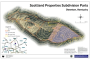
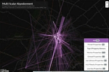
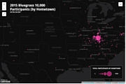

RYAN COOPER
GIS | WEB MAPPING | DESIGN | EDUCATION
Mapper for print and the web. Designer for clear, simple visual communication. Passionate about working with those interested in using maps to achieve their own goals.
- Ryan Cooper
- Lexington, Kentucky, USA
- ryancooper729@gmail.com
- 317.431.4871
- www.ryan-m-cooper.com
Employment
-
GIS TechnicianApril 2014 - Present
Georgetown-Scott County Planning Commission
Maintained local thematic and parcel datasets for Scott County, collaborated with citizens, business partners, and public officials to create custom print and web map products, designed and maintained new GSCPC website, developed educational materials to help residents use mapping technology, worked with planners to develop and visualize a proposed county-wide trail network, presented on web mapping at professional conferences
-
Asset Information TechnicianDecember 2013 - April 2014
Kentucky Utility
Mapped installation and removal of distribution services and meters in the Lexington and Midway KU service areas using Smallworld, ensured the accuracy of the distribution services with regular field checks ensured service location and connectivity accuracy by synthesizing information from field work and online research, adhered to departmental best practices to maintain consistency in LG&E-KU's distribution databases.
-
Teaching AssistantAugust 2011 - May 2013
Department of Geography, University of Kentucky
Led weekly discussion sections and provided individual support for introductory GIS/digital mapping courses, provided technical support for undergraduate/graduate students involved in GIS-based community partnership projects, developed and coordinated course curriculum in cooperation with fellow teaching assistants and professors.
-
Teaching AssistantAugust 2010 - May 2011
Department of Geography, Ball State University
Led weekly lab and provided individual support for introductory physical geography class, developed supplemental academic materials for students
-
Geography & German TutorAugust 2007 - May 2009, August 2010 - May 2011
Learning Center, Ball State University
Assisted clients with course work for undergraduate physical and human geography courses, assessed client progress, adapted tutoring sessions based on client progress and learning style.
-
Information & Media SpecialistAugust 2009 - May 2010
Institute for European Studies, Indiana University - Bloomington
Developed Access-based media library check-out system, maintained media library, edited and created content for quarterly newsletter.
Projects
-
maptimeLEXSeptember 2014 - Present
Founder, Organizer
Organized monthly meetups for beginner-centric mapping workshops, developed and presented workshops on open source mapping technology, solicited the talents of local mappers and developers to present on their areas of expertise
-
Lexington Housing ProjectJuly 2015 - Present
Data & Mapping Specialist
Scraped and cleaned property and ownership records from the Fayette County PVA website, mapped connections between ownership and vacant properties in Lexington
Education
-
University of KentuckyAugust 2011 - May 2013
Master of Arts, Geography
Thesis: Re-Placing Sprawl: Mapping Place in an American Suburb
Research Focus: GIS, place identity, digital mapping technologies
-
Ball State UniversityAugust 2010 - May 2011
Geography
Research Focus: Critical GIS, GIS in Community-University partnership
-
Indiana UniversityAugust 2009 - June 2010
Institute for European Studies
Research Focus: Post-WWII Dutch history, culture, and geography
-
Ball State UniversityAugust 2005 - May 2009
Bachelor of Arts, Geography
Bachelor of Arts, German
GIS & Mapping
-
Desktop GIS
-
ArcGIS 9.3/10.x
-
QGIS 2.x
-
Smallworld
-
-
Database
-
ArcSDE
-
ArcGIS for Server
-
PostrgreSQL/PostGIS
-
-
Mapping Libraries
-
Leaflet
-
mapbox.js
-
cartooDB.js
-
esri-leaflet.js
-
Google Maps JS API
-
-
Mapping Platforms
-
TileMill/Mapbox Studio
-
CartoDB
-
ArcGIS Online
-
Programming
-
Web
-
HTML/CSS
-
JavaScript/jQuery
-
Bootstrap
-
WiX
-
Jekyll
-
-
Scripting
-
Ruby
-
Python
-
R
-
-
Version Control
-
Git/GitHub
-
Design
-
Vector Graphics
-
Inkscape
-
Adobe Illustrator
-
DrawPlus X5
-
-
Raster Graphics
-
GIMP2
-
Adobe Photoshop
-
-

Food: An Atlas
Print Cartography -

Cairo Field Sites
Print Cartography -

Scott/Owenton County Boundary Property
Print Cartography -

Finley 5K Course Map
Web Mapping / Programming -

Hollyoak Market & Farm: Customer Counts
Web Mapping / Programming -

BGT's Endangered List
Web Mapping / Programming -

Georgetown Sanborn Map - 1912
Web Mapping / Graphic Design / Programming -

Open Source Web Mapping Workshop
Education / Web Mapping -

Georeferencing w/ Mapwarper
Education -

Multi-Scalar Abandonment of Lexington Housing
Web Mapping / Programming / Data Scraping -

2015 Bluegrass 10K Participant Map
Web Mapping / Data Scraping -

GSCPlanning.com Buttons
Graphic Design -

GSCPC Logo
Graphic Design -

Household Hazardous Waste Infographic
Graphic Design -

Where My Pitches At? Kickball Team Shirt
Graphic Design -

Franklin County Solid Waste Administrator Logo
Graphic Design


{kind=link}
{kind=link}
{kind=link}
{kind=link}
{kind=link}
{kind=link}
{kind=link}
{kind=link}
{kind=link}
{kind=link}
{kind=link}
{kind=link}
Contact info
- Lexington, Kentucky, USA
- Email: ryancooper729@gmail.com
- Phone: 317.431.4871
- Website: www.ryan-m-cooper.com
- Twitter: @maptastik